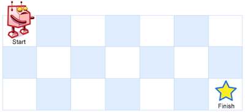

62. 不同路径
一维滚动：dp[j] += dp[j-1]，即「上 + 左」；第一行（和每行第一列）全是 1，一行行往下滚。
思路
dp[j]滚动一行用：进入第i行之前，它正好是上一行到各列的路径数。- 递推
dp[j] += dp[j-1]：dp[j]旧值是「从上面下来」，dp[j-1]已更新的新值是「从左边过来」。 - 第一行只能一路向右、每行第一列只能一路向下，全是 1，
Arrays.fill一次搞定，不用单独处理。 - 内层
j从左往右扫，才能保证dp[j-1]已经是本行的值。
图解
最优解
1import java.util.*;2 3class Solution {4 public int uniquePaths(int m, int n) {5 // dp[j]：走到当前行第 j 列的路径数6 int[] dp = new int[n];7 Arrays.fill(dp, 1); // 第一行：每格只有 1 条路8 for (int i = 1; i < m; i++) {9 for (int j = 1; j < n; j++) {10 // dp[j] 旧值是「上」，dp[j-1] 已更新成「左」11 dp[j] += dp[j - 1];12 }13 }14 return dp[n - 1];15 }16}题目
一个机器人位于一个 m x n 网格的左上角 （起始点在下图中标记为 “Start” ）。
机器人每次只能向下或者向右移动一步。机器人试图达到网格的右下角（在下图中标记为 “Finish” ）。
问总共有多少条不同的路径？
示例 1：

输入：m = 3, n = 7 输出：28
示例 2：
输入：m = 3, n = 2 输出：3 解释： 从左上角开始，总共有 3 条路径可以到达右下角。 1. 向右 -> 向下 -> 向下 2. 向下 -> 向下 -> 向右 3. 向下 -> 向右 -> 向下
示例 3：
输入：m = 7, n = 3 输出：28
示例 4：
输入：m = 3, n = 3 输出：6
提示：
1 <= m, n <= 100- 题目数据保证答案小于等于
2 * 109
题面取自力扣当前版本。
数据快照 2026-11-04。题面版权归力扣所有，本站点仅供本人学习使用，请勿对外发布。